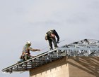
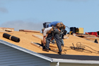
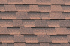

Salem Roofing Services
All Weather Construction, Inc. is a professional Salem roofing contractor providing a variety of services for both residential customers. Our roofing services include all types of residential roofs and residential roofing solutions, new roofs, re-roofs, tear offs, leak repairs, roof decking replacement, roof consulting, roof maintenance programs, roof inspections, general roof repairs, and much more! Call us today at 503-390-2251 to schedule service and request an estimate for your roofing needs.
Roofing Services We Provide in Salem
Residential Roofing
The Salem roofing contractors at All Weather Construction, Inc. can take care of all your residential roofing needs from the largest project to the smallest. From new roof installation to complete tear offs and re-roofs, our residential roofing specialists will have your project completed on time, within budget, and with expert quality results. [...] Read More
Roof Types
When it comes to residential roofing, All Weather Construction, Inc. is your source for quality roofing services and products. Our crew of residential roofing experts can take care of all your roofing needs from roof repairs to new roof installation and re-roofing. At All Weather Construction, Inc. we are the roofing services company you can rely on to get the job done correctly and efficiently so you can get back to business as usual. [...] Read More
Roof Repairs
From roof leaks to missing roofing shingles, our Salem roofing contractor is here to take care of all your residential roof repairs. We'll get the job done efficiently and correctly, ensuring your roofing problems are taken care of with expert precision for long lasting results. We have years of experience dealing with all sorts of roof repairs, so you can rest assured that we have the man-power, skills and tools to take care of your roof repair needs. [...] Read More
Roof Inspections
Regular roof inspections can ensure any problems with your roofing are taken care of before it becomes a costly issue. Having one of our professionals provide your home or business with a thorough roof inspection takes the guess work out of roof repairs and maintenance. Get an honest evaluation on the condition of your roof by calling All Weather Construction, Inc. today to schedule a roof inspection with our skilled roofers. [...] Read More
Roof Leak Repairs
Is your roof leaking, or are you starting to notice brown water stains on your ceiling? Call the Salem roofing services specialists today to schedule roof leak repairs. Neglecting to have your roof leaks repaired quickly can result in further damages to the structural integrity of your home or business, not to mention mold growth. Protect your property and your health - call us today to take care of your roof leak repairs! [...] Read More
Roof Replacement
When you need a roof replacement, put your trust in our expertise. Never settle for an amateur roofer - this will only cost you more in repairs later on. At All Weather Construction, Inc. our Salem roofers have years of experience and training to ensure that your roof replacement is completed properly, with precision and the utmost care for your property. [...] Read More
Roof Types
At All Weather Construction, Inc. we service and install all types of residential roofing, including composite shingles, cedar shingles, asphalt roofing shingles, and flat roofing. Whatever type of roof you have or want, our expert Salem roofing contractors can provide you with the expert services and high quality products to ensure your new roof is beautiful and durable. [...] Read More